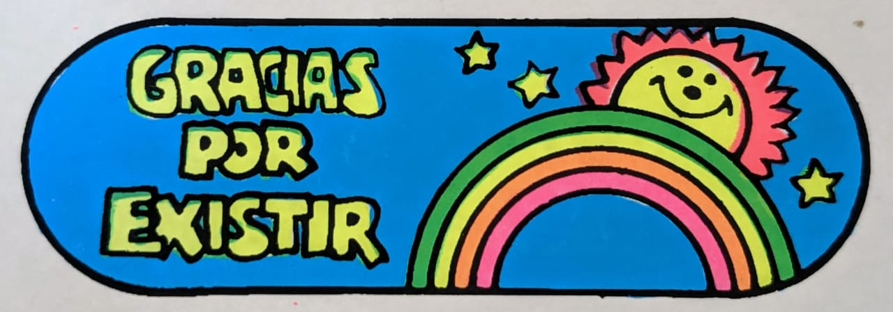

COMPUTACIÓN AVANZADA
Eduardo Perez Infante
Perfil
- Disciplina / formación
- Arquitecto, Estudios de las Comunicaciones
- Qué hago hoy
- Administración, producción técnica
- Qué me gustaría aprender en este curso
- Visualizar y compartir data, integrar data como parametros de diseño

Intereses
- Dimension performativa del diseño.
- El Juego como fenómeno cultural y como entrada al diseño.
- Deportes: ciclismo, natacion, tenis.
Una pregunta que me interesa explorar
Escribe una pregunta pequeña que pueda transformarse en reglas, datos, geometría, imágenes o interacción.
Algo que me inspira
Agrega una imagen local en assets/images/ y cítala con Markdown,
o agrega un link a un proyecto/referencia.
Ver modelo 3D
Links
No es necesario publicar información personal que no quieras compartir. Este README será parte de un repositorio público durante el laboratorio.